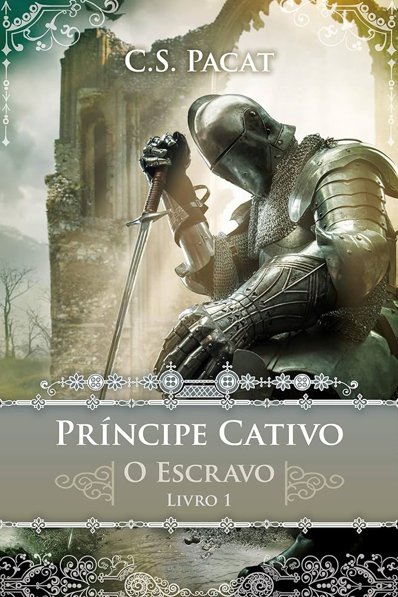

O PRÍNCIPE CATIVO
Damianos é um herói para o seu povo e o legítimo herdeiro do trono de Akielos. Mas, depois da morte do pai, seu meio-irmão toma o poder e o captura, vendendo-o como escravo. O guerreiro é obrigado então a servir a Laurent, o príncipe de Vere, a poderosa nação inimiga.